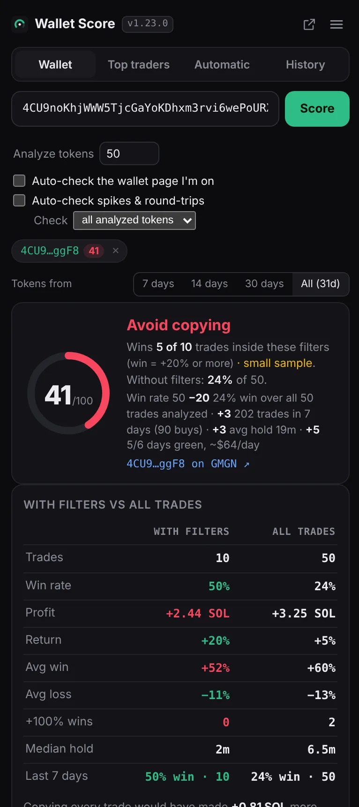
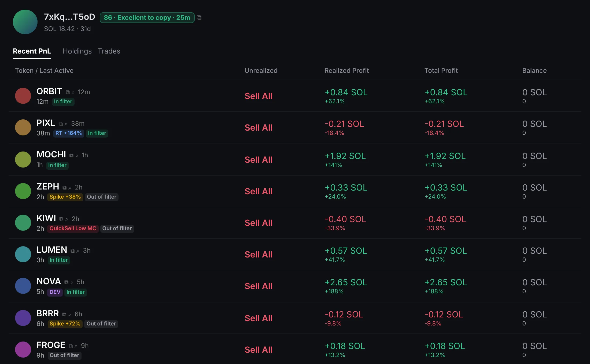

Wallet tab
Paste a Solana wallet and press Score. The extension pulls the wallet's trades from the last 31 days, analyzes up to its newest 50 tokens (you can change the number) and shows:
- The 0–100 score, its grade (Excellent, Good, Coin flip, Avoid copying) and every line that went into it.
- With filters vs all trades: trades, win rate, profit, return, average win and loss, +100% wins, median hold and the last 7 days, side by side.
- The token list, with labels for DEV, spikes, round-trips, QuickSell Low MC and repeat buys.
- A period switch (7, 14, 30 days or all 31) to see how the wallet does over shorter windows.
Saved wallets reopen for free from History. Opening one that's more than 30 minutes old fetches only the trades made since.

Wallet lists
Paste many wallets at once, one per line or separated by commas, and press Score. Each one is analyzed in turn; the list shows its score as it finishes, then sorts by score. Click an address to open it on GMGN, or the rest of the row to reopen its analysis. While one wallet is analyzed, the next is pulled in the background.
Recommended filters
The extension tries every market-cap and buy-size range the wallet traded in and keeps the one that makes the most SOL while winning often, then cuts weak edges and blocks QuickSell trades with a higher minimum market cap. Tap a value to copy it. The buy size and market cap tables show where wins and losses come from, and the cut-off checker shows how the wallet does below any market cap you type.
Big winners left out
When 2 or more trades of +100% fall outside the recommended filters, a note under With filters vs all trades names them and shows the wider filter that would catch them. Tap Show stats with the wider filter to add a Wider column to the table: trades, win rate, profit, return, wins and losses with that filter. It also tells you whether the wider range holds up without those trades or depends on a few lucky wins. It's a preview: the score and filters stay the same.
Token age
The extension knows how old each token was when the wallet bought it. A Token age at buy table (under 1h up to 90+ days) sits next to Buy size and Entry market cap, and each token shows its age. When it clearly does better, the recommended filters add a Min / Max token age, cut at whole days around the wallet's own trades (for example 31 days when it wins on month-old tokens and loses on old ones). Turn it off in Settings → Analysis.
Platforms
See where the wallet bought: Pump.fun, PumpSwap, Meteora, Bonk.fun, Raydium and more, each with trades, win rate and net SOL. Tap a platform to leave it out, and the extension suggests which one to turn off when it's dragging the results down.
Spikes & round-trips
An optional check, about 20 Helius credits per token, that looks at the price right around each trade:
- Entry spike: how far the price jumped within a block of the wallet's buy. A copier buying a block later pays that much more.
- Round-trip: a trade that went up 50% or more and still closed red. A take-profit would have caught it.
Run it on all analyzed tokens or only those inside the filters (they're the ones that count in the score). It can run automatically on every wallet you analyze, and a progress bar shows how far along it is.
Top traders
Paste a token address or GMGN link, or several separated by commas, and press Find. The extension reads up to 50,000 of the token's trades and ranks every trader by realized profit.
- Show the top 25, 50, 75 or 100, filtered by Min PnL (in % or SOL) and Max buys.
- Score all of them, or have new searches scored automatically. Round-trip checks can run only on wallets above a score you choose.
- Multi-wallet flags mark wallets trading in the same block as others. In a multi-token search, "3 of 4 tokens" shows repeat winners.
- Auto-check: when you open a token on GMGN, it's searched right away.
Holders
Switch Top traders to Holders and check a token's top 25, 50 or 100 holders. Each is labelled: Dev, Bundler, Sniper, Insider, Fresh wallet, Same funder, Phishing, Multi-wallet or Suspicious. A summary shows how much the top 10, the dev, bundlers and snipers hold, plus mint and freeze authority, with a short "watch out" list.
Automatic
Finds recently migrated tokens that pass your filters (market cap, 24h volume, age, fees, holders and dev share), reads each token's top traders and scores the best of them. It runs one token at a time, can repeat on a timer while the panel is open, and keeps a log with the credits used. You can also import your own token list to scan.
History
Every wallet and Holders check you've run, with views for All, Top traders and Holders. Search, sort by newest or score, copy all 90+ wallets, and reopen anything for free.
Labels on GMGN
On a gmgn.ai wallet page, a badge next to the address shows the score, grade and how old it is (faded after a day). Each analyzed token gets labels: DEV, Spike, RT, QuickSell Low MC, and In filter or Out of filter. Clicking the badge re-analyzes the wallet. Nothing is added inside GMGN's token side panel, nothing on the page is clicked or changed, and you can turn it off in settings.

How scoring works
The score starts at the wallet's win rate inside its recommended filters. A win means the trade made +10% or more. Then these rules add or take away points. These are the defaults; every number can be changed in Settings → Scoring.
| Rule | When | Points |
|---|---|---|
| High win rate | Over 50% win inside the filters, 5+ trades | +15 |
| Filters make the difference | 3× the no-filter profit, 2+ SOL, 10+ trades (5× and win rate 10 pts higher: +20) | +10 / +20 |
| Filters make it profitable | Losing overall but profitable inside the filters: the red-days penalty drops to −5 and the overall win rate penalty is halved | softer |
| Green days | Profitable days in the last 7, by profit per day | +5 to +20 |
| Round-trips | Trades up 100% that closed red (needs the check) | +3 to +8 |
| Low win rate | Under 35% (35–40%: −20) | −50 |
| Overall win rate | Under 25% over all trades (under 40%: −10) | −20 |
| Recent form | Last 7 days under 30% win (under 45%: −10) | −30 |
| Very busy | 1,000+ trades in 7 days (over 500: −15) | −40 |
| Quick flipper | Half its tokens sold within 20 seconds | −40 |
| Fast flips | 10–50%+ of tokens held under 10 seconds | −5 to −20 |
| Entry spikes | Most buys followed by a 50%+ jump (needs the check) | −10 to −20 |
| Red week | Every trading day in the last 7 lost money | −50 |
| Too few tokens | Only 1 token (2 tokens: −15) | −25 |
| Short holds | Half its tokens sold within 40 seconds | cap 60 |
| QuickSell Low MC | Sold within 15 s after buying under $5K | counts −20% |
| Perfect record | 9+ trades, all profitable, no red flags | 100 |
Every other wallet is capped at 99. Tokens the wallet created (DEV) can be left out of the score in settings.
Settings & storage
- Helius API keys: add several; when one runs out of credits, the next is used. Each shows its usage.
- Analysis: tokens to analyze, minimum trades per filter, fill gap, never-sold tokens, DEV tokens, platforms, GMGN labels.
- Storage: a meter of what's saved, with a Clear button per kind of data and automatic clean-up when storage is almost full.
- Scoring: Automatic (the defaults above) or Custom, where every rule and number is yours.